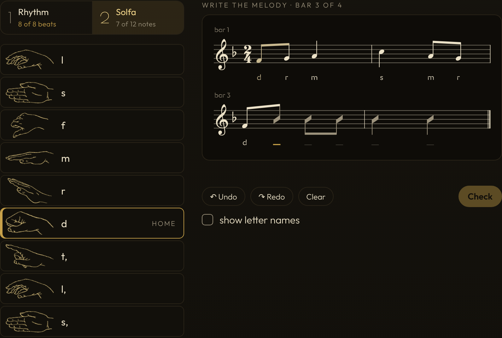
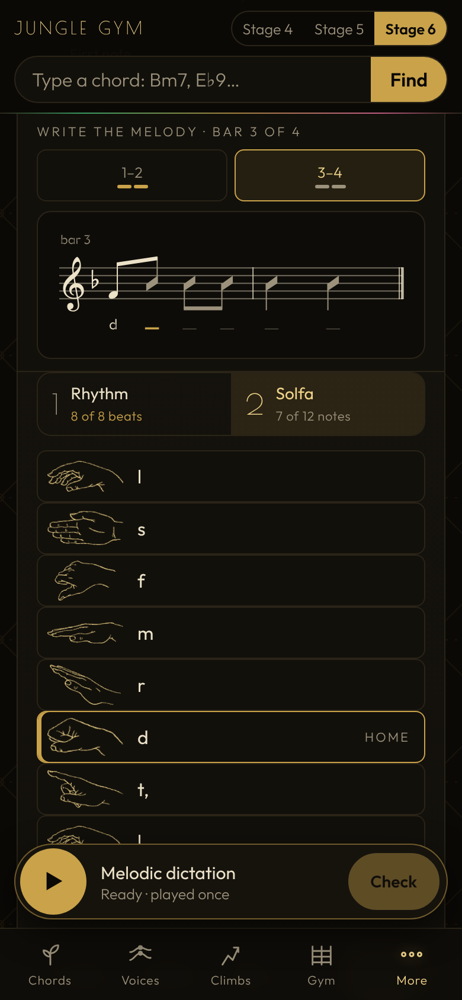
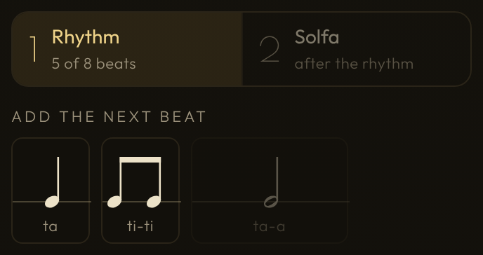
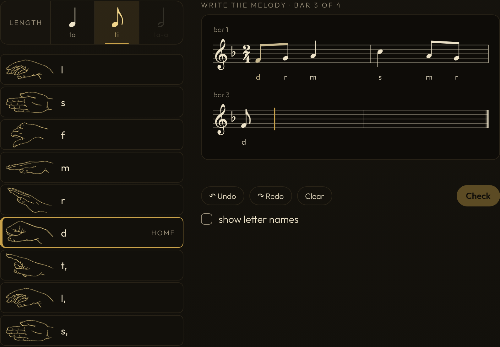
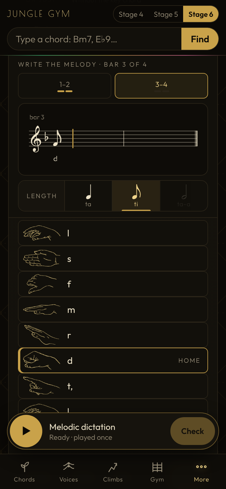
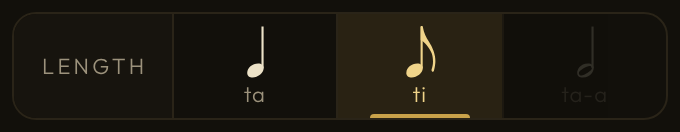

Same melody, same moment. Rung 6, four bars of 2/4, twelve notes. The student has written seven and is in bar 3.


Earlier in the same question: five of eight beats tapped. The tile names sit under the notes.



One name per note, so two quavers are two taps of ti. Notes are beamed as they are written.
